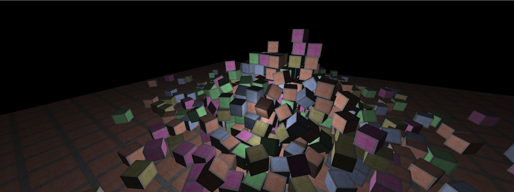
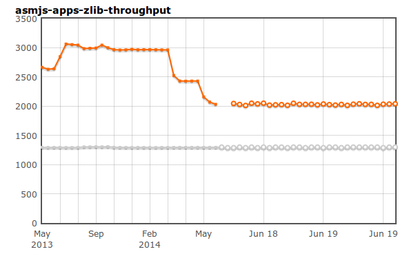
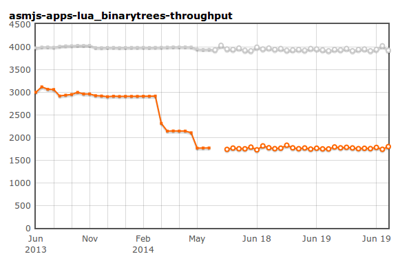

JavaScript et performances
Benjamin Bouvier,
@njbenji
&&
ben@mozilla.com
JavaScript et performances
asm.js et le futur de JavaScript
Benjamin Bouvier, Mozilla, Paris, 2014-06-18
Il était une fois JavaScript
Un des trois piliers du développement web avec HTML5 et CSS3
Langage de programmation imaginé par /be chez Netscape
Implémenté dans tous les navigateurs actuels
Nerf de la guerre de la performance
L'arrivée de la compilation à la volée (Mozilla puis Google)
Vitesse :
x 100
Des applications web complexes
Clients mails
Réseaux sociaux
Cartes géographiques
L'idée : transformer des applications natives en applications web
Pourquoi JS ?
Brique de base du Web
Multi-paradigmes
Haut-niveau
Optimisé par le navigateur
Portable
Plateforme Web : Mises à jour et distribution simplifiées
asm.js
Sous-ensemble de JavaScript
Typé statiquement
Très bas niveau
Objectif : assurer des
hautes performances
de manière
prédictible
, dans
tous
les navigateurs
emscripten
plus d'emscripten
Basé sur LLVM
Compile du C / C++ vers du JavaScript (transpilation)
Peut générer de l'asm.js
Associe des APIs HTML5 aux appels systèmes et graphiques
Le portage nécessite peu de modifications du code initial
Facilite le portage d'applications existantes pour le web
Demo : Ammo.js
Portage d'une bibliothèque C++, bullet
Ammo.js

Demo : Banana Bread
FPS multijoueur
Portage du jeu Cube 2: Sauerbraten
BananaBread
Demo : Unreal Engine 3
Portage du moteur de jeu Unreal Engine 3
Base de plusieurs millions de lignes de code en C++
Durée de portage :
4 jours
Editeurs de moteurs de jeux
PlayCanvas (exemple :
swoop
)
Unreal Engine 4
Unity 5
AAA rated Games
asm.js permet de lancer des jeux de catégorie AAA dans le navigateur.
Dead Trigger 2
Autres exemples de portages
J2ME
Python interpreter / Pypy
SQLite
La liste est longue !
Demo : Dulux web visualizer
Visualisation et rendering
Portage d'une application Android native
Dulux
L'évolution de la rapidité
 
L'avenir de la performance en JS
Parallel JS
SIMD (Single Instruction Multiple Data)
Multi-threading
Questions ?
Merci de votre attention
Benjamin Bouvier
ben@mozilla.com
@njbenji
sur Twitter
#jsapi sur irc.mozilla.org
pour des questions techniques sur le moteur JS de Firefox
Slides
:
http://bnjbvr.github.io/talk-javascript-performance